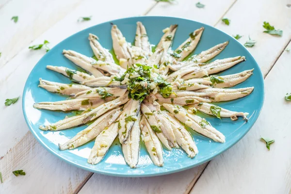
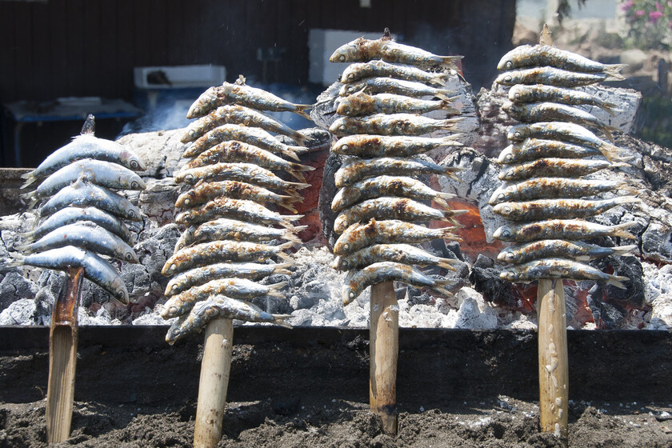
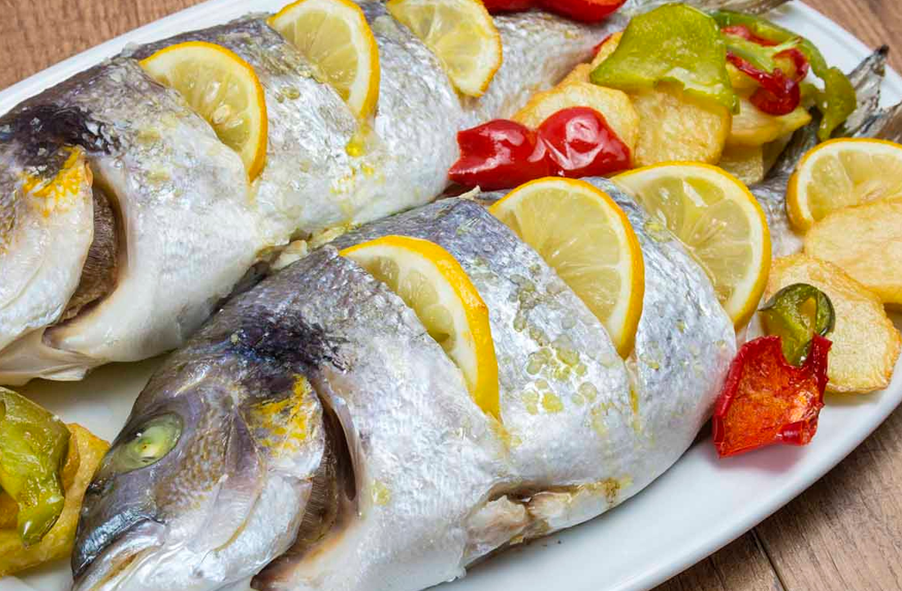
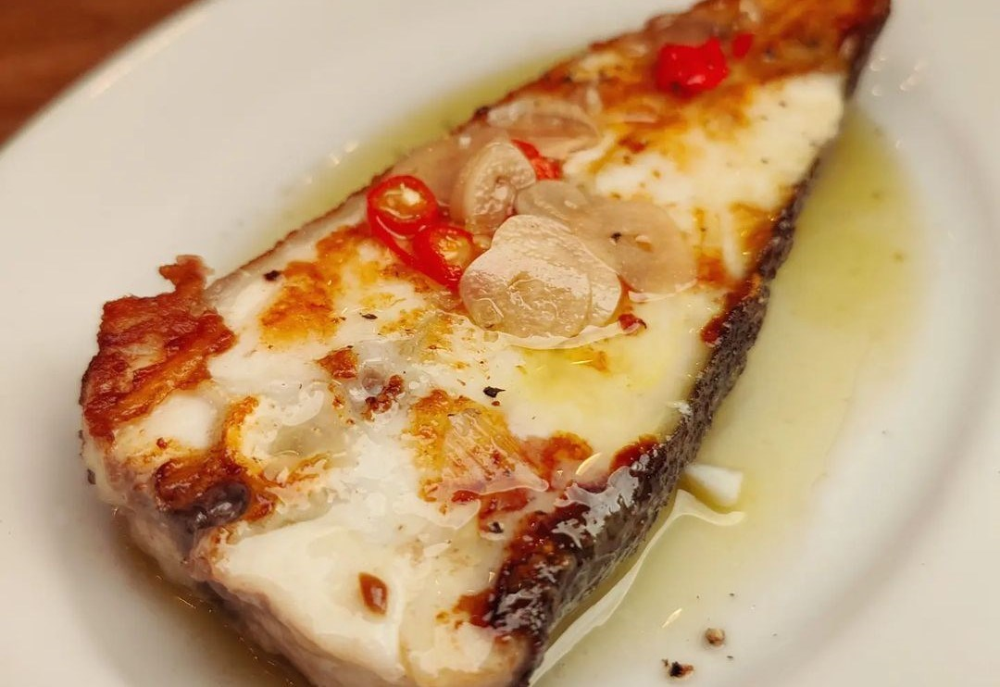

Introducción
En Málaga disponemos de una grandísima cantidad de peces, que además de ser bonitos, son sabrosos. La unión entre el mar y la gastronomía es incuestionable, y más si hablamos de Málaga, una ciudad que te invita a consumir de este preciado alimento gracias a su clima y su fauna rica en distinto peces y moluscos. La cantidad de peces que hay en el mar Mediterráno es absurda, así que no voy a poder abarcarlos todos. Los que si vamos a ver son los más clásicos en la costa malagueña, en los que se incluyen los boquerones, la caballa o la dorada.
Boquerones
Los boquerones son uno de los peces más icónicos de Málaga, por eso a los malagueños se nos conoce como "boquerones". Son familia de las anchoas, su cuerpo es pequeño, de forma alargada y cuerpo plateado, con aletas traseras de color gris oscuro. Su carne es tierna, blanca y suave, lo que los convierte en un ingrediente ideal para diversas preparaciones culinarias.
Sardinas
Las sardinas son peces muy emblemáticos en Málaga, por los tan conocidos "espetos". Las sardinas son peces de tamaño modesto, de cuerpo alargado y esbelto, con piel plateada y carne jugosa. Su sabor inconfundible, caracterizado por su frescura y su matiz ligeramente salado, refleja la esencia misma del mar Mediterráneo.
Dorada
La dorada es un pez de tamaño mediano, de cuerpo ovalado y plateado, con aletas traseras de color gris claro. Su carne es suave y jugosa, lo que la convierte en un ingrediente ideal para diversas preparaciones culinarias. La dorada se ha convertido en un pescado muy popular en numerosos platos de pescado al horno y a la parrilla que se disfrutan en la región.
Pintarroja
Las pintarrojas son alargadas y estilizadas, con una piel rugosa y espinas que les proporcionan una apariencia distintiva. Su carne es blanca, suave y delicada, y su sabor es suave, con un toque ligeramente dulce. Aunque no son tan conocidas como otros pescados, las pintarrojas tienen un lugar especial en la cocina malagueña debido a su versatilidad y sabor único.
